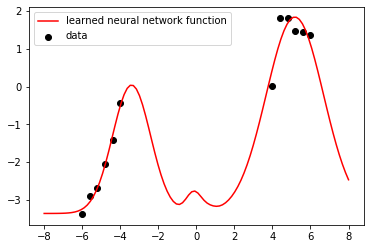
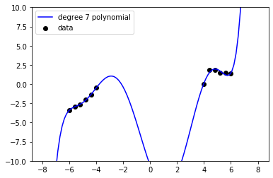
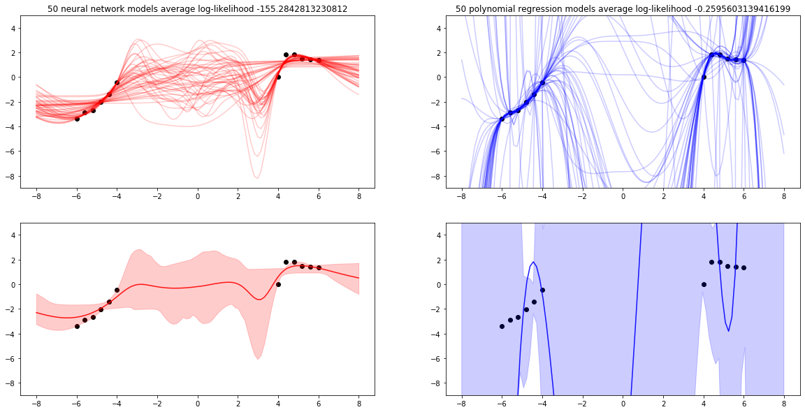
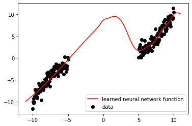
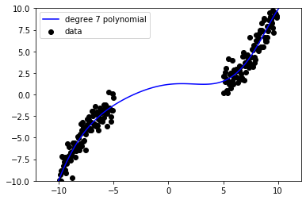
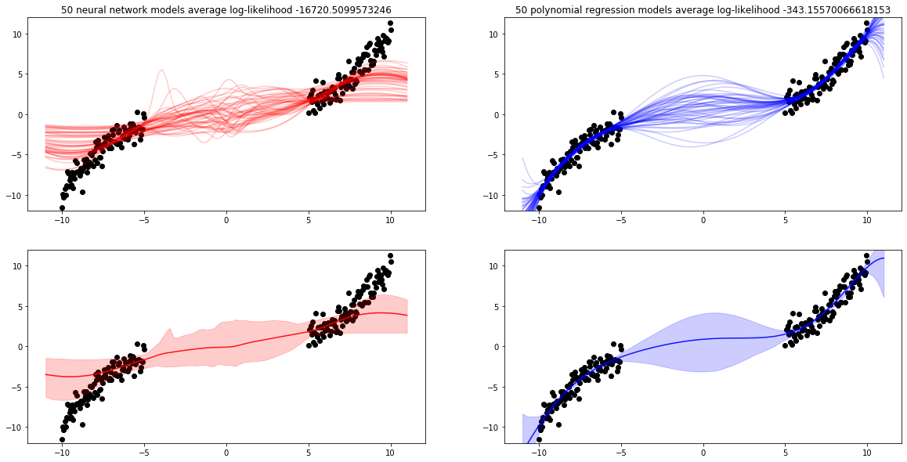

Lab 7: Non-Linear Models for Regression#
This lab is adapted from AM207 (Harvard). Data files are in the book’s data/ folder. Worked solutions are collapsed: try each exercise before expanding them.
class Feedforward:
def __init__(self, architecture, random=None, weights=None):
self.params = {'H': architecture['width'],
'L': architecture['hidden_layers'],
'D_in': architecture['input_dim'],
'D_out': architecture['output_dim'],
'activation_type': architecture['activation_fn_type'],
'activation_params': architecture['activation_fn_params']}
self.D = ( (architecture['input_dim'] * architecture['width'] + architecture['width'])
+ (architecture['output_dim'] * architecture['width'] + architecture['output_dim'])
+ (architecture['hidden_layers'] - 1) * (architecture['width']**2 + architecture['width'])
)
if random is not None:
self.random = random
else:
self.random = np.random.RandomState(0)
self.h = architecture['activation_fn']
if weights is None:
self.weights = self.random.normal(0, 1, size=(1, self.D))
else:
self.weights = weights
self.objective_trace = np.empty((1, 1))
self.weight_trace = np.empty((1, self.D))
def forward(self, weights, x):
''' Forward pass given weights and input '''
H = self.params['H']
D_in = self.params['D_in']
D_out = self.params['D_out']
assert weights.shape[1] == self.D
if len(x.shape) == 2:
assert x.shape[0] == D_in
x = x.reshape((1, D_in, -1))
else:
assert x.shape[1] == D_in
weights = weights.T
#input to first hidden layer
W = weights[:H * D_in].T.reshape((-1, H, D_in))
b = weights[H * D_in:H * D_in + H].T.reshape((-1, H, 1))
input = self.h(np.matmul(W, x) + b)
index = H * D_in + H
assert input.shape[1] == H
#additional hidden layers
for _ in range(self.params['L'] - 1):
before = index
W = weights[index:index + H * H].T.reshape((-1, H, H))
index += H * H
b = weights[index:index + H].T.reshape((-1, H, 1))
index += H
output = np.matmul(W, input) + b
input = self.h(output)
assert input.shape[1] == H
#output layer
W = weights[index:index + H * D_out].T.reshape((-1, D_out, H))
b = weights[index + H * D_out:].T.reshape((-1, D_out, 1))
output = np.matmul(W, input) + b
assert output.shape[1] == self.params['D_out']
return output
def make_objective(self, x_train, y_train, reg_param=None):
''' Make objective functions: depending on whether or not you want to apply l2 regularization '''
if reg_param is None:
def objective(W, t):
squared_error = np.linalg.norm(y_train - self.forward(W, x_train), axis=1)**2
sum_error = np.sum(squared_error)
return sum_error
return objective, grad(objective)
else:
def objective(W, t):
squared_error = np.linalg.norm(y_train - self.forward(W, x_train), axis=1)**2
mean_error = np.mean(squared_error) + reg_param * np.linalg.norm(W)
return mean_error
return objective, grad(objective)
def fit(self, x_train, y_train, params, reg_param=None):
''' Wrapper for MLE through gradient descent '''
assert x_train.shape[0] == self.params['D_in']
assert y_train.shape[0] == self.params['D_out']
### make objective function for training
self.objective, self.gradient = self.make_objective(x_train, y_train, reg_param)
### set up optimization
step_size = 0.01
max_iteration = 5000
check_point = 100
weights_init = self.weights.reshape((1, -1))
mass = None
optimizer = 'adam'
random_restarts = 5
if 'step_size' in params.keys():
step_size = params['step_size']
if 'max_iteration' in params.keys():
max_iteration = params['max_iteration']
if 'check_point' in params.keys():
self.check_point = params['check_point']
if 'init' in params.keys():
weights_init = params['init']
if 'call_back' in params.keys():
call_back = params['call_back']
if 'mass' in params.keys():
mass = params['mass']
if 'optimizer' in params.keys():
optimizer = params['optimizer']
if 'random_restarts' in params.keys():
random_restarts = params['random_restarts']
def call_back(weights, iteration, g):
''' Actions per optimization step '''
objective = self.objective(weights, iteration)
self.objective_trace = np.vstack((self.objective_trace, objective))
self.weight_trace = np.vstack((self.weight_trace, weights))
if (iteration % self.check_point == 0) & (iteration > 0):
print("Iteration {} lower bound {}; gradient mag: {}".format(iteration, objective, np.linalg.norm(self.gradient(weights, iteration))))
### train with random restarts
optimal_obj = 1e16
optimal_weights = self.weights
for i in range(random_restarts):
if optimizer == 'adam':
adam(self.gradient, weights_init, step_size=step_size, num_iters=max_iteration, callback=call_back)
local_opt = np.min(self.objective_trace[-100:])
if local_opt < optimal_obj:
opt_index = np.argmin(self.objective_trace[-100:])
self.weights = self.weight_trace[-100:][opt_index].reshape((1, -1))
weights_init = self.random.normal(0, 1, size=(1, self.D))
self.objective_trace = self.objective_trace[1:]
self.weight_trace = self.weight_trace[1:]
Problem Description: Non-linear Models for Regression#
From Chapter 21, we’ve seen that we can take our favourite generalized linear models and replace the linear function \(\mathbf{w}^\top \mathbf{X}\) with \(g_{\mathbf{W}}(\mathbf{X})\), where \(g_{\mathbf{W}}\) is a neural network with parameters \(\mathbf{W}\). The advantage of using neural networks to represent non-linear function is that neural networks allows us to build up complex non-linear functions very cheaply and quicklly through composition of simple functions. A neural network \(g_{\mathbf{W}}\) with a fixed architecture can approximate a wide range of different functions.
In this lab, we compare fitting neural networks regression models with polynomial regression models.
Part I. Small Data Set#
Read in the data in lab_7_data.csv.
(Learning the Model) Fit 100 different MLE neural network models (with the given architecture or your own choice) on this data. The data is small so don’t bootstrap, rather, initialize your network parameters randomly for each fit.
(Model Evaluation) Compute the average log-likelihood of the observed data over these 1000 MLE models.
(Model Evaluation) Visualize the predictive distributions of your 1000 MLE models (i.e. use them to predict on a range of uniformly spaced values from [-8, 8] and then plot either the 95% predictive interval or plot all the models as lines).
(Compare with Polynomial Regression) Do the above for polynomial models with polynomial degree 7. Which model class (polynomial or neural network) is a better fit for the data? Which model class produces better aleotoric uncertainty? Which model class prodcues better epistemic uncertainty? Why?
Example of Fitting One NN to the Data#
| x | y | |
|---|---|---|
| 0 | -6.0 | -3.380284 |
| 1 | -5.6 | -2.892117 |
| 2 | -5.2 | -2.690059 |
| 3 | -4.8 | -2.040000 |
| 4 | -4.4 | -1.399942 |
Iteration 200 lower bound 4.7417770474922785; gradient mag: 3.5878302150194825
Iteration 400 lower bound 3.763760619716274; gradient mag: 2.941313118378996
Iteration 600 lower bound 2.964891126920991; gradient mag: 2.4696108679242834
Iteration 800 lower bound 2.329703188498748; gradient mag: 2.0663648966446284
Iteration 1000 lower bound 1.8459856639263232; gradient mag: 1.6940120855377858
Iteration 1200 lower bound 1.4976254439792949; gradient mag: 1.3491032022279879
Iteration 1400 lower bound 1.2624898963325641; gradient mag: 1.0405421588923827
Iteration 1600 lower bound 1.114721923758202; gradient mag: 0.7777490552927369
Iteration 1800 lower bound 1.0285904824812797; gradient mag: 0.5629319969280473
Iteration 2000 lower bound 0.9818811848193401; gradient mag: 0.39844775732974874
Iteration 2200 lower bound 0.95788865828741; gradient mag: 0.2790683847598746
Iteration 2400 lower bound 0.9457231314342398; gradient mag: 0.19626127286449607
Iteration 2600 lower bound 0.9392541899149588; gradient mag: 0.1409468613920357
Iteration 2800 lower bound 0.9354715427612286; gradient mag: 0.10616977058640834
Iteration 3000 lower bound 0.9330243987556261; gradient mag: 0.0785213602172833
Iteration 3200 lower bound 0.9312966057960221; gradient mag: 0.060966882976902496
Iteration 3400 lower bound 0.9299672200660521; gradient mag: 0.07717943256113238
Iteration 3600 lower bound 0.9288427876935692; gradient mag: 0.04968064038270425
Iteration 3800 lower bound 0.9278067575859936; gradient mag: 0.03514816679047284

Example of Fitting One Polynomial Regression Model to the Data#

Fitting Multiple Models to the Data Through Bootstrapping and Random Restarts#
trial: 0
trial: 10
trial: 20
trial: 30
trial: 40

Part II. “Large” Data Set#
Using the data that is generated by the code provided below.
(Learning the Model) Fit 100 different MLE neural network models (with the given architecture or your own choice) on this data. Bootstrap from the data as well as initialize your network parameters randomly for each fit.
(Model Evaluation) Compute the average log-likelihood of the observed data over these 1000 MLE models.
(Model Evaluation) Visualize the predictive distributions of your 1000 MLE models (i.e. use them to predict on a range of uniformly spaced values from [-11, 11] and then plot either the 95% predictive interval or plot all the models as lines).
(Compare with Polynomial Regression) Do the above for polynomial models with polynomial degree 7. Which model class (polynomial or neural network) is a better fit for the data? Which model class produces better aleotoric uncertainty? Which model class prodcues better epistemic uncertainty? Why?
Example of Fitting One NN to the Data#
Iteration 200 lower bound 235.79624100899485; gradient mag: 9.024782233130294
Iteration 400 lower bound 230.10382556454368; gradient mag: 7.599406953596322
Iteration 600 lower bound 225.15999271471992; gradient mag: 6.288451078653309
Iteration 800 lower bound 221.26226390870283; gradient mag: 5.3314368503935565
Iteration 1000 lower bound 218.25364028042998; gradient mag: 4.609745609708375
Iteration 1200 lower bound 215.88744162234156; gradient mag: 4.036980819690466
Iteration 1400 lower bound 213.95885303462904; gradient mag: 3.5534700979106146
Iteration 1600 lower bound 212.54609820397292; gradient mag: 3.0911603442344737
Iteration 1800 lower bound 211.39725357380127; gradient mag: 530.5125118361777
Iteration 2000 lower bound 210.40066092839123; gradient mag: 2.7307529809175555
Iteration 2200 lower bound 209.5659401850809; gradient mag: 34.28048132578321
Iteration 2400 lower bound 208.81161070606106; gradient mag: 8.17587082384065
Iteration 2600 lower bound 208.1825708177094; gradient mag: 2.648675439584072
Iteration 2800 lower bound 207.60786794484002; gradient mag: 232.59362471196815
Iteration 3000 lower bound 207.08211417147555; gradient mag: 1.9756128130364394
Iteration 3200 lower bound 206.63011435253486; gradient mag: 4.336870587857289
Iteration 3400 lower bound 206.2173185449373; gradient mag: 549.3303729658678
Iteration 3600 lower bound 205.82869561147666; gradient mag: 1.599988183503101
Iteration 3800 lower bound 205.4861690810344; gradient mag: 211.00374236790594
Iteration 4000 lower bound 205.1556178383529; gradient mag: 1.5659663050092947
Iteration 4200 lower bound 204.86274959744395; gradient mag: 93.6410847937038
Iteration 4400 lower bound 204.58103490293396; gradient mag: 1.4370258926124297
Iteration 4600 lower bound 204.33552057837352; gradient mag: 6.017856268663095
Iteration 4800 lower bound 204.09066814121473; gradient mag: 1.3462804175880294

Example of Fitting One Polynomial Regression Model to the Data#

trial: 0
trial: 10
trial: 20
trial: 30
trial: 40
